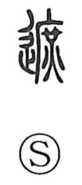

遮

Uncategorized
Kun: saegiru | On: sha
to block ・ to obstruct ・ to cover ・ to ward off
Explanation
遮 is a phono-semantic character. Its phonetic component is 庶, whose old form depicts a cooking pan under a kitchen roof with fire beneath, originally meaning to boil. The semantic imagination aligns with 者, understood as a clay boundary in which an apotropaic charm was buried to encircle and protect the community. Brought together through their close sounds, these elements yield the sense of obstruction not as mere physical blockage, but as a protective, ritual interception that wards off harmful forces to preserve the sacred. This underlies meanings like to obstruct or cut off and is echoed in the compound 遮洌, which speaks of barring evil to keep the sacred pure and, by extension, also names the guardians of the Son of Heaven.